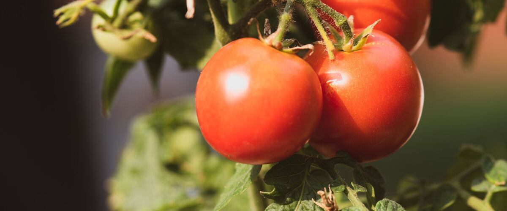

When to plant tomatoes in Oak Harbor and Whidbey Island, WA
Start tomatoes from seed indoors Mar 20 – Apr 3, then plant the young plants in the garden in Oak Harbor and Whidbey Island May 15 – Jun 12.
- Difficulty
- Moderate
- Sun
- Full sun; the hottest spot you have
- Spacing
- 2 feet apart
- Planting depth
- Bury the stem up to the first leaves
- Frost
- Killed by frost
- First harvest
- About 75 days after planting
Why these dates
Oak Harbor and Whidbey Island's typical last spring frost is March 13. Frost kills tomatoes, and warm-season crops also need warm soil. Soil here stays cold for weeks after the last frost, so planting waits until about May 15.
West-side valleys. The Willamette Valley, Puget Sound and southern Oregon valleys. Long frost-free seasons, but soil stays cold and wet into May, so warm crops wait for warm soil, not just the last frost.
How to grow tomatoes in Oak Harbor and Whidbey Island
- Start seeds indoors Mar 20 – Apr 3 in trays or small pots under a grow light or in your sunniest window. Or skip this step and buy young plants (starts) at a garden center.
- Harden off the young plants: about a week before planting, set them outside for a few hours a day, a little longer each day.
- Plant them in the garden May 15 – Jun 12, 2 feet apart. Bury the stem up to the first leaves.
- Water deeply once or twice a week rather than a little every day, and mulch once the soil is warm.
- Harvest: Pick when fully colored. Before fall rains, pick green tomatoes and ripen them indoors.
Key numbers
- 75–85°FSoil to sprout
- Soil 60°F, nights near 50°FPlant out when
- Nights 60–70°FBest fruit set
- 6.2–6.8Soil pH
- 1+ inch a week, steadyWater
- Late blight in fall rainBiggest risk
How it works
The plant biology behind the advice above, in plain language.
Soil and feeding
Tomatoes do best in loose, well-drained soil with a pH of about 6.2 to 6.8. Work in a couple of inches of compost before planting and add a balanced vegetable fertilizer. Go easy on nitrogen: too much grows big, leafy plants that flower late and set less fruit, which is the last thing you want in a short Northwest summer.
Planting deep works because tomato stems grow roots wherever they're buried. A leggy transplant set in a trench or a deep hole ends up with a much larger root system, which helps it find water in August.
Why temperature matters so much
Tomato seeds sprout best in soil around 75 to 85°F and barely at all below 50°F. Once planted out, growth stalls whenever nights drop below about 50°F, which is why transplants set out in cold April soil often sit still for weeks and get passed by plants set out later.
Fruit set is the bigger issue here. Tomato pollen develops poorly when nights fall below about 55°F (and also when they stay above about 75°F or days top 90°F), so early flowers simply drop off. That's not a disease; it's the weather. Nights of 60 to 70°F give the best set. Varieties like Stupice and Oregon Spring were picked because they set fruit in cooler nights than most.
West of the Cascades, the easiest gains come from warming things up: plant against a south-facing wall, use black plastic mulch or wall-o-water protectors early, and wait to mulch with straw until the soil has warmed, since straw keeps cold soil cold.
Water, and what causes blossom-end rot
Water deeply and on a regular schedule, roughly an inch or more a week in summer, at the base of the plant. Blossom-end rot, the leathery black patch on the bottom of the fruit, is a calcium shortage inside the fruit, but it's almost always caused by uneven watering rather than a lack of calcium in the soil. Calcium moves to the fruit with water, so dry spells interrupt the supply. Steady watering and mulch fix it; adding calcium rarely does.
Cracked fruit has a similar cause: a heavy watering or rain after a dry spell makes the fruit swell faster than the skin can stretch.
Late blight, the big Northwest risk
Late blight is caused by Phytophthora infestans, a water mold (the pathogen behind the Irish potato famine). It thrives in cool, wet weather, roughly 60 to 70°F with leaves that stay wet for hours, which is exactly what arrives with the first fall rains. Spores blow in from nearby tomatoes and potatoes, and there's no cure once a plant is infected: dark, greasy blotches spread over leaves and stems, and fruit turns brown and firm.
Prevention is about keeping leaves dry. Water at the soil, space plants for airflow, remove the lowest leaves, and, if you can, grow under a simple rain cover or in a greenhouse. Varieties bred for resistance, such as Mountain Magic, Defiant PhR and Iron Lady, hold up noticeably better. Bag and throw out infected plants rather than composting them, and pull up volunteer potatoes, which can carry the disease.
Ripening and storage
Ripening is driven by ethylene, a natural plant hormone, and the red pigment (lycopene) forms best at about 68 to 77°F. Above about 85°F it barely forms, which is why fruit can stall orange in a heat wave, and in cool fall weather ripening slows to a crawl.
A tomato picked once it shows its first blush of color will ripen indoors with nearly the same flavor as one left on the vine. Before fall rains or frost, pick full-size green fruit (glossy, with a lighter color starting at the blossom end) and ripen it at room temperature. Keep ripe tomatoes on the counter: the fridge, below about 55°F, dulls their flavor and turns the texture mealy.
Common questions
When is the last frost in Oak Harbor and Whidbey Island, WA?
Typically March 13. In 9 years out of 10, frost is over by April 1. These are 1991–2020 NOAA climate normals for Whidbey Island Naval Air Station.
Is it too late to plant tomatoes in Oak Harbor and Whidbey Island?
The spring planting window runs through June 12. Later plantings may not have time to produce before the first fall frost, which usually arrives around November 14.
When should I start tomatoes from seed indoors in Oak Harbor and Whidbey Island?
March 20 to April 3, which is 8 to 6 weeks before the May 15 planting date. Or buy young plants at a garden center instead.
Why are my tomato flowers falling off without making fruit?
Usually temperature. Tomato pollen develops poorly when nights drop below about 55°F or days go above about 90°F, so the flowers drop. It's common in June west of the Cascades and during heat waves east of them. Fruit set picks up on its own once nights settle between 60 and 70°F.
What causes blossom-end rot?
A shortage of calcium in the developing fruit, almost always caused by uneven watering rather than a lack of calcium in the soil. Water deeply on a steady schedule and mulch once the soil is warm. The first fruits of the season are most affected, and later ones are usually fine.
Should I remove tomato suckers?
It's optional. On tall, indeterminate varieties, removing some suckers improves airflow (which helps against blight here) and can speed ripening of the fruit that's left, at the cost of a smaller total crop. Don't remove suckers from bush (determinate) varieties; that just cuts the harvest.
How do I ripen green tomatoes at the end of the season?
Pick full-size green tomatoes that are glossy and starting to lighten at the bottom, and keep them at room temperature, out of the sun. They'll ripen over one to three weeks. Small, hard, dull-green fruit won't ripen well and is best for fried green tomatoes or chutney.
Also plant in Oak Harbor and Whidbey Island around the same time
Planting dates for tomatoes in nearby areas
- Bellingham, WA May 15 – Jun 12
- Mount Vernon and Burlington, WA May 15 – Jun 12
- Anacortes, WA May 15 – Jun 12
- Friday Harbor and the San Juans, WA May 15 – Jun 12
- Portland, OR May 15 – Jun 12
- Gresham, OR May 15 – Jun 12
Full planting calendar for Oak Harbor and Whidbey Island · Tomatoes in every city